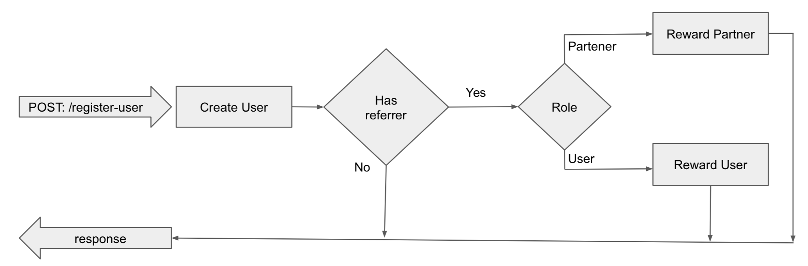

How it works
Schnapps is a library that allows to connect services in a chain-like structure. The chain bundle can be
reused or extended.
It can be used with Express, Hapi, or with any other framework that's based on request-response cycle.
Let's assume we want to build a JWT authentication mechanism for our API, having three access roles:
USER,
MANAGER,
ADMIN. We'll start by breaking down our authentication flow into steps, for
each step we'll write a handler
function. Think of a handler function as service method, where each method is responsible for a specific task:
- First we need to parse our request object and substract our Bearer Token
- Then we'll try to decode the token and substract
userId and role
- And last, we need to check wether the user is allowed to access the route, by checking its
role
For each step we'll create a handler - keeping in mind that the output of each handler serves as input to the
next handler.
Now let's connect them all together
In this example we have connected all handlers into a single controller. But it's not always in handy to write
all
those
handlers for every route a user can access. Let's split our controller into reusable parts so whenever we need a
secured route we could simply "extend"
our authentication controller.
Note that a constructor function accepts anoter controller or handler function as input parameters. In fact, it
accepts
any number of controllers and handlers. The resutling controller will inherit all handlers in the same order as
they
where declared in the constructor function.
Now let's extend our authentication flow, so we can re-use it in our app
And for the final part, let's connect our controllers to the framework
Non-linear flows
There are many cases where the flow is conditioned by the input data. Let's say we are building a community
platform,
where each user can refer new users and receive bonus points. Besides users, we have affiliate parteners who can
also refer users and receive a commission. Therefore, our data flow is conditioned wether the registering user
has
provided a referrer id or not. The second condition will be based on the role of the referrer : simple
users receive bonus ponints, parteners receive commissions, as in the diagram below:

We can use next() to pass another controller object like so:
next(controller, {someInptData});.
Let's replicate the same flow using Schnapps. We'll start by defining each block as a separate controller.
Using Stores
Stores are temporary data holders. Think of a store as temporary data attachet to the request object - like a
session. As
long as the request-responce cycle is in progress you can access the stored data. Once the cycle is over, the
data is disposed
along with the request object.
Session Store - extends request object with a session object and a
setSession() method
Shared Store - Similar to session store it extends request object with a
shared object and a setShared() method.
Altho it has the same structure as the session store, its purpose is to store, share and aggregate data between
handlers. For example we need to create a route in which we return detailed information about a user, alog with
its current balance. Assuming that we already have a service that given a userId will return user's details,
and a similar service which returns user's balance. Let's create a controller that re-uses those services
Global error handler
As mentioned in the first example - end() and catch() are optional for any controller
and this is true - since we have access to response object in any handler (altho for a cleaner code we do
recomend using
.end() for handling responses). What if we don't want to handle errors on each controller ? The
solution is
really simple with Schnapps - we just need to define a global error handler. This way, controllers which do not
have an
explicit error handler defined will fallback to global error handler.
More cool stuff
Use controller as a promise. Not that when a controller is called as promise, it will bypass .end()
and
.catch()
Or convert it to an Express.js middleware. Note that when a controller is called as middleware, it will bypass
.end() and
.catch()
Ready to start using Schnapps? check out our
API Documentation